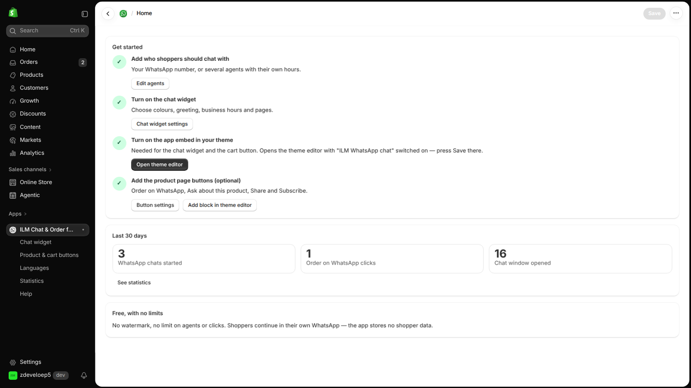

Install the app from your Shopify admin. It opens on the Home page with four setup steps.

Open the Chat widget page. Under Agents, click Add agent. Enter a name and a WhatsApp number with country code.
Turn on Show the chat widget on my store. Then click Save.
On the Home page, click Open theme editor. The theme editor opens with the app embed "ILM WhatsApp chat" switched on. Press Save there.
The chat button now shows on your store. This works with Dawn, Horizon and other Online Store 2.0 themes.
On the Home page, click Add block in theme editor. This adds the block "ILM WhatsApp buttons" to the product page. Press Save there.